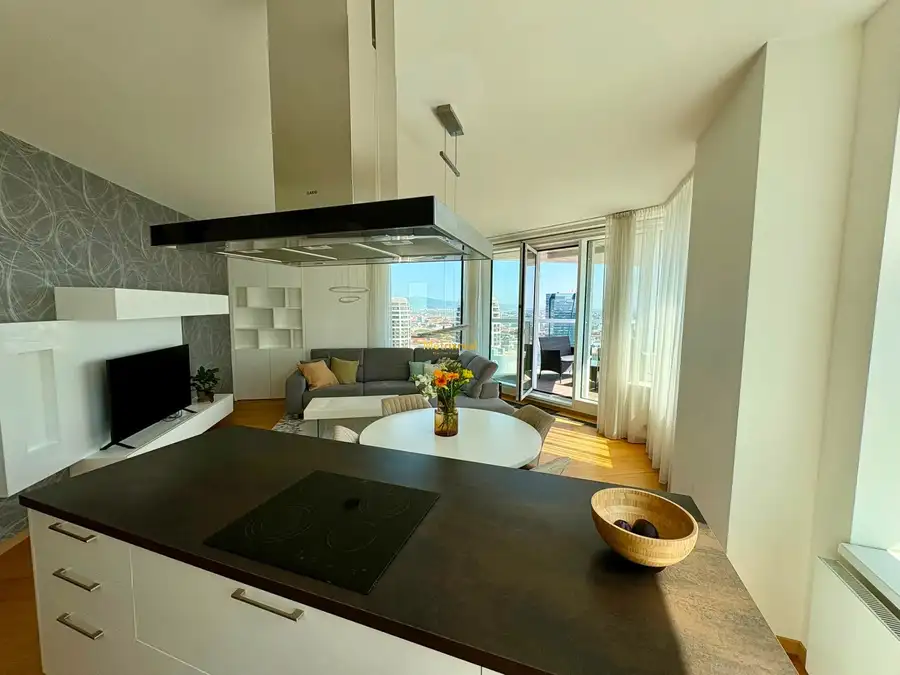
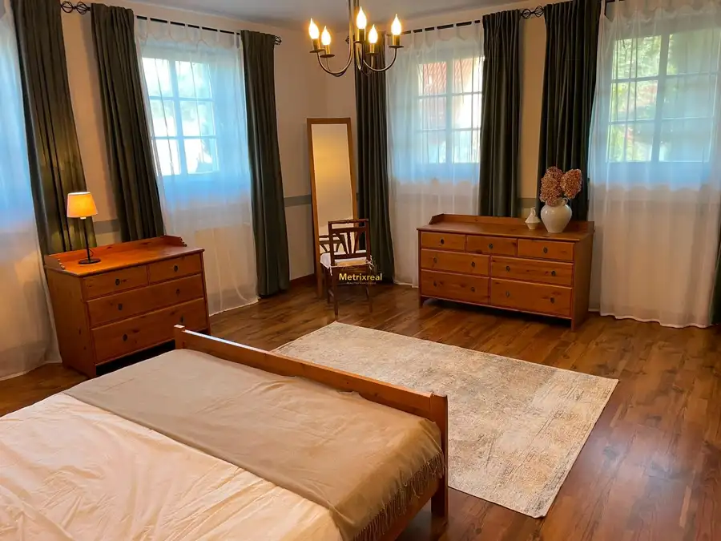
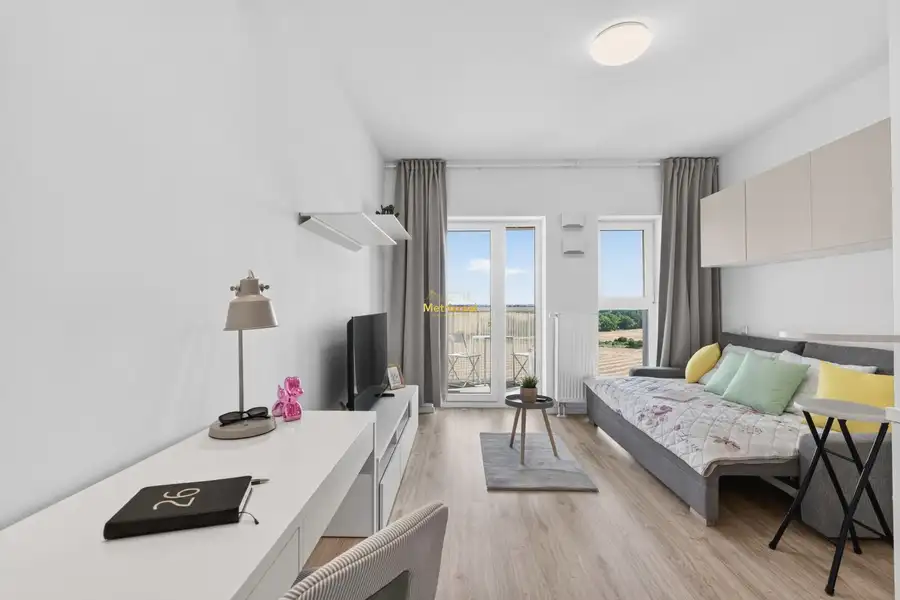

Polyfunkčná hala na predaj – Stupava | 504 m² | pozemok 909 m² | 11 pa
Stupava
- Plocha504 m²
- Poschodie0.
- Stavúplne prerobený
O nehnuteľnosti
Ponúkam na predaj samostatný polyfunkčný objekt v novostavbe, situovaný v priemyselnej časti mesta Stupava. Nehnuteľnosť predstavuje zaujímavú investičnú príležitosť pre podnikateľov a firmy, ktoré hľadajú vlastné priestory pre skladovanie, distribúciu, e-shop, ľahkú výrobu alebo administratívne zázemie.
Veľkou výhodou je strategická poloha s rýchlym napojením na diaľnicu D2 smer Bratislava a Českú republiku.
ADMINISTRATÍVNA A SOCIÁLNA ČASŤ – 288 m²
Administratívne a sociálne zázemie je rozdelené do dvoch podlaží a poskytuje novému majiteľovi možnosť prispôsobiť priestory presne podľa vlastných potrieb.
Prízemie ponúka:
sociálne priestory,
sprchu a toalety,
technickú miestnosť,
priestor na ďalšie využitie podľa potrieb majiteľa,
priamy prechod do skladovej časti.
Poschodie poskytuje veľkorysý priestor vhodný na vybudovanie kancelárií, zasadacích miestností alebo ďalšieho firemného zázemia.
MOŽNOSŤ FIREMNÉHO BÝVANIA
Výrazným benefitom objektu je možnosť dokončenia časti priestorov ako firemného bytu s výmerou približne 144 m².
Táto možnosť ponúka široké využitie nielen pre samotné podnikanie, ale aj ako zázemie pre majiteľa, manažment alebo zamestnancov.
POZEMOK A PARKOVANIE
K objektu prináleží pozemok s výmerou 909 m².
Priamo pri hale je k dispozícii až 11 vyhradených parkovacích miest, čo predstavuje významnú výhodu pre zamestnancov, klientov aj návštevy.
Celý areál je oplotený a vybavený kamerovým systémom. Vstup zabezpečuje robustná železná brána s kontrolovaným prístupom.
LOKALITA
Objekt sa nachádza v priemyselnej časti Stupavy, ktorá ponúka výbornú dostupnosť a strategickú polohu pre podnikateľské využitie.
Rýchle napojenie na D2 zabezpečuje pohodlnú dostupnosť smerom na Bratislavu aj Českú republiku, čo je výhodné najmä pre firmy pôsobiace v oblasti logistiky, distribúcie, e-commerce a výroby.
INVESTIČNÁ PRÍLEŽITOSŤ
Nehnuteľnosť ponúka kombináciu skladových, administratívnych a sociálnych priestorov s možnosťou ďalšieho prispôsobenia podľa potrieb nového majiteľa.
Vďaka svojej dispozícii, pozemku, parkovacím kapacitám a polohe je vhodná pre firmy, investorov aj podnikateľov hľadajúcich vlastné firemné sídlo s prevádzkovým zázemím.
Cena: 850 000€
V prípade záujmu o viac informácií, kompletnú fotodokumentáciu alebo osobnú obhliadku ma neváhajte kontaktovať.
Zodpovedný maklér: Daniela Švantnerová
Tel. kontakt:
E-mail:
METRIXREAL – Realitná kancelária | Člen Realitnej únie SR
Garancia profesionálneho a férového prístupu.
/
Parametre
| Rozloha pozemku | 909 m² |
|---|---|
| Úžitková plocha | 504 m² |
| Poschodie | prízemie |
| Stav | úplne prerobený |
| Kúpeľňa | áno |
| Zateplený objekt | áno |
| Strecha | po rekonštrukcii |
| Novostavba | áno |
| Dátum zverejnenia | 11. 8. 2026 |
Kde to je
Mohlo by Vás zaujímať

Byt10 2 150 €Bývanie v oblakoch: Luxusný 3-izbový byt na 31. poschodí Panorama City Staré Mesto 3-izbový90 m²31. podlažie So súhlasom majiteľa ponúkame na prenájom nadštandardný, reprezentatívny a kompletne zariadený 3-izbový byt v prestížnom projekte Panorama City…
Rodinné domy10 2 300 €Rodinný dom v Dúbravke Pri lese | blízko British International School Dúbravka 170 m² So súhlasom majiteľa Ponúkame na prenájom priestranný rodinný dom situovaný v pokojnej a vyhľadávanej časti Bratislavy – Dúbravka, v bezprostrednej…
Byt10 Cena dohodouModerná zariadená garsónka s parkovaním v novostavbe Slnečnice POP Petržalka 1-izbový22.33 m²7. podlažie Ponúkam na prenájom modernú, kompletne zariadenú garsónku v novostavbe Slnečnice POP na ulici Labutia 9 v Bratislave – Petržalke. Byt je pripravený…